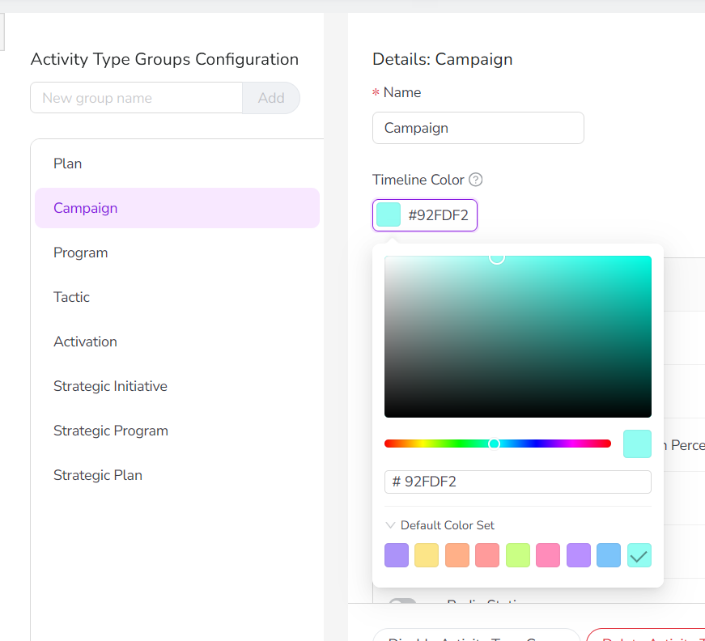
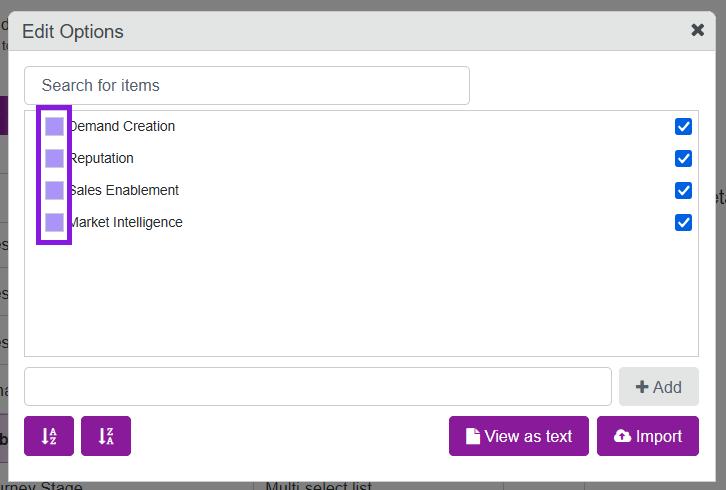
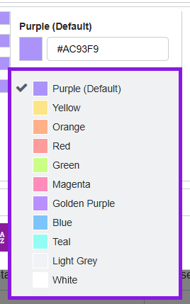
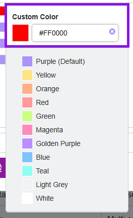

As an administrator, you can set up color-coding for activity bars in the Timeline display mode. Color-coding makes it easier for users to identify activities at a glance.
There are two methods for color-coding activity bars:
Default color-coding (based on activity type group): Color-codes the activity bars according to the activity type group that they belong to. After it has been set up, this color-coding method is applied to the Timeline display mode by default.
Color-coding by attribute: Color-codes the activity bars based on the value set on an activity for a user-selected attribute.
Both color-coding methods are optional, so you can choose to set up only one of the two if needed.
Set up default color-coding
You can set a Timeline Color for each of your activity type groups. The Timeline Color you set on an activity type group is used as the default color on the Timeline for all activities of the activity types within that group. If no Timeline Color is set on an activity type group, the system will display the applicable activity bars in the Timeline using the system-default color (purple).
Set the default Timeline Color for an activity type group
In the Activities section, click Settings:
In the Activity Configuration menu, click Activities > Types & Groups.
In the list of activity types and groups, click on the activity type group for which you want to set a default Timeline Color.
In the settings for the selected activity type group, click the Timeline Color setting to open the color picker.
In the color picker, select the default color you want to use for activities in this type group on the Timeline. You can:
Use the color picker controls to choose a specific color and shade
Type a hex code into the text field
Click on a preset color from the default color set 
After you have chosen a color, click Save Changes. Your changes will take effect immediately.
Optional: Repeat steps 3-5 to set Timeline Colors for your other activity type groups, if needed.
The Timeline Colors you set will be used on the Timeline whenever Select Color-Coding > Color by is set to the Default color option.
Set up color-coding for an attribute
You can set up color-coding for any Drop-Down List attribute by assigning a color to each of the attribute's values.
After you have configured an attribute for color-coding, that attribute becomes available as an option in the Select Color-Coding > Color by menu on the Timeline. When users select the attribute from this menu, the activity bars are color-coded according to the value the activity holds for the selected attribute, using the colors you have specified for each attribute value. For more details, see Color-code Timeline activity bars.
Set up color-coding for Drop-Down List attribute
In the Activities section, click Settings:
On the Activity Configuration page, the Attribute Definitions section should be displayed by default.
If you're on a different page, click Attributes > Attribute Definitions in the navigation menu.
In the list of attribute definitions, click on the Drop-Down List attribute for which you want to set up color-coding. The attribute's Attribute Details panel is displayed.
In the Attribute Details panel, click Edit Options. The Edit Options dialog opens.
To set the color for an attribute option, click the colored square by the option's name to open the color picker panel: 
Use the color picker panel to choose a color for the selected attribute:
Click on any of the color presets to select that color: 
Optional: To specify a custom color, type the hex code for the color you want into the text field: 
Click anywhere outside the color picker panel to save your color choice for the selected option.
Repeat steps 5 to 7 to set colors for other attribute options as needed.
When you are finished, click Close on the Edit Options dialog to exit.
You have set up color-coding for an attribute. The attribute will now appear as a selectable option in the Select Color-Coding > Color by menu on the Timeline.
 Settings:
Settings: 
{kind=link}
 Close on the Edit Options dialog to exit.
Close on the Edit Options dialog to exit.